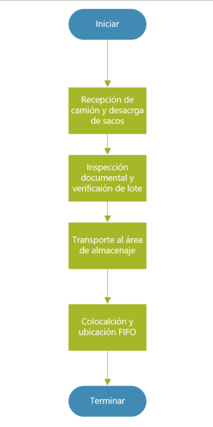
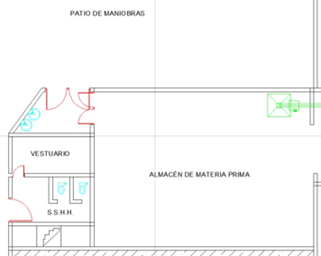
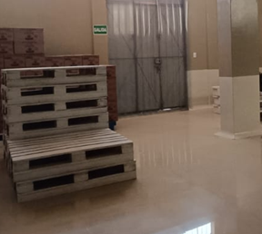
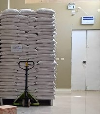
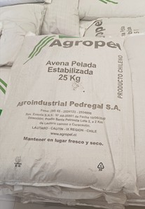

Datos Generales
| Empresa: | Procesadora Agroindustrial Nuevo Imperio E.I.R.L. |
|---|---|
| Área: | Producción |
| Operación: | Recepción y Almacenado |
| Diagrama Nº: | 01 |
| Objetivo: | Estimar tiempos y establecer cómo se realiza el proceso para capacitar al operador. |
| Método: | Actual |
| Operador(es): | Supervisor y Almacenero |
| Elaboró: | ___ / Fecha: 21/10/2025 |
| Aprobó: | ___ / Fecha: 23/10/2025 |
I. Contenido de la Operación
| Contenido | Descripción / Detalles |
|---|---|
| Principales pasos |
1. Recepción de camión 2. Inspección documental 3. Descarga y pesaje 4. Almacenaje FIFO |
| Tiempo de operación | 0.8409 min total por ciclo (ver diagrama de flujo) |
| Puntos clave | Controlar peso, lote y ubicación FIFO |
| Razón para puntos clave | Asegurar trazabilidad y evitar errores de mezcla |
| Herramientas | Carretilla, báscula, guantes, montacargas |
| Equipo de seguridad | Casco, guantes, botas, mascarilla |
| Concepto por inspeccionar | Peso, estado del saco, etiquetado, lote |
| Grado de importancia | Alta |
| Frecuencia | Cada lote |
| Método de inspección | Inspección visual y verificación con guía |
| Norma de aceptación | Cumplir tolerancia de ±0.5 kg y sin daño visible |
| Tipo de registro | Registro en hoja de operación y control |
II. Diagramas y Evidencias
| Diagrama de Proceso | Layout y Foto del Lugar |
|---|---|
|

Diagrama Nº 01: Flujo del proceso de recepción y almacenaje. |
Layout de UbicaciónFoto del Lugar |
Descripción del Proceso
El proceso de Recepción y Almacenado se realiza desde la llegada del camión con materia prima hasta su correcta ubicación en el área designada. Se verifica la documentación, el peso y las condiciones de los sacos, aplicando el principio FIFO para mantener el orden, la trazabilidad y la conservación del producto.
Hoja de Procedimiento Estándar
| Actividad | Punto clave | Razón | Ayuda visual |
|---|---|---|---|
| Recepción de camión y descarga de sacos | Ubicar el camión correctamente en el área designada, verificar frenos y estabilidad. Descargar los sacos evitando rupturas y acumulación excesiva en el suelo. | Garantizar la seguridad del personal, prevenir accidentes y evitar daños o pérdidas de materia prima durante la descarga. | |
| Inspección documental y verificación de lote | Revisar la guía de remisión, número de lote, proveedor y peso total. Comparar con la orden de compra y registrar los datos en la hoja de control. | Asegurar la trazabilidad del lote y confirmar que la materia prima recibida cumple con los requerimientos de ingreso establecidos. | |
| Transporte al área de almacenaje | Utilizar transpaleta en buen estado. Mantener el pasillo libre de obstáculos. Cargar una cantidad segura de sacos por viaje. | Evitar accidentes, derrames o esfuerzos innecesarios del personal, y mantener la fluidez en el traslado interno. |  |
| Colocación y ubicación FIFO | Apilar los sacos de forma estable sobre parihuelas, separando por lote y fecha de ingreso, verificando los datos en el saco. | Mantener el orden, la trazabilidad y garantizar que los productos más antiguos se utilicen primero, evitando vencimientos o contaminación cruzada. |  |